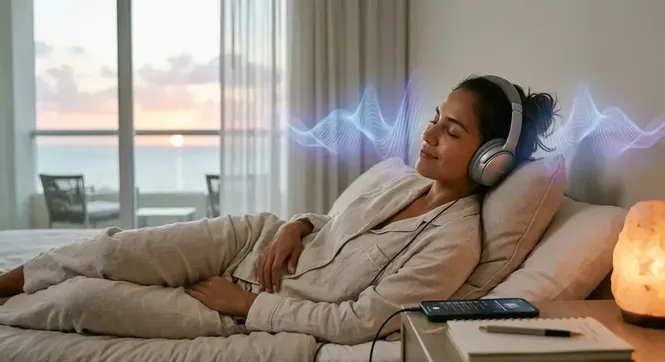

Apagas la alarma, abres los ojos y en cuestión de segundos una avalancha de pensamientos automáticos invade tu cabeza: las deudas acumuladas, la incertidumbre financiera, los problemas laborales o esa insidiosa sensación de insuficiencia que te acompaña desde hace años. Si te has preguntado exactamente qué escuchar en la mañana para reprogramar la mente subconsciente al despertar , estás a punto de descubrir el secreto neurobiológico más poderoso para transformar tu realidad. Durante los primeros 20 minutos de tu día, tu cerebro se encuentra en un estado electromagnético sagrado donde la barrera del pensamiento crítico está completamente abierta, permitiendo implantar patrones de abundancia, salud y éxito sin resistencia.
La inmensa mayoría de las personas arruina su destino antes de salir de la cama. Al tomar el teléfono móvil inmediatamente para revisar redes sociales, mensajes o noticias, fuerzas a tu cerebro a saltar drásticamente desde las ondas de descanso profundo hacia la banda Beta Alta, activando la producción instantánea de cortisol y adrenalina. Este choque biológico enjaula tu conciencia en el 'modo supervivencia', haciendo que repliques exactamente el mismo patrón mental del día anterior. Si no cambias la señal de entrada al despertar, es matemáticamente imposible que construyas una vida diferente.
⚡ LA VENTANA HIPNOPÓMPICA: EL PORTAL A TU SUBCONSCIENTE
Al pasar del sueño a la vigilia, tu cerebro atraviesa el estado hipnopómpico. Durante esta breve ventana temporal, tus ondas cerebrales oscilan entre la banda Theta (4 Hz - 8 Hz) y Alfa (8 Hz - 12 Hz) . Aquí, tu mente analítica está dormida y tu subconsciente absorbe la información del entorno como una esponja biológica.
La ciencia del estado Theta al despertar: Por qué los primeros 20 minutos dictan tu año
El subconsciente no opera mediante la lógica ni el lenguaje conceptual ordinario; opera a través de resonancia vibracional, frecuencias electromagnéticas y patrones de repetición. Cuando despiertas, las suturas neuronales de tu mente consciente aún no se han cerrado por completo. Este fenómeno, medible mediante la electroencefalografía , demuestra que el cerebro se comporta exactamente igual que el de un niño de siete años en pleno proceso de imprint bioemocional.
Si durante esta ventana sagrada nutres tu campo auditivo con estímulos acústicos calibrados en frecuencias armónicas puras, estás reescribiendo el código fuente de tu sistema operativo mental. La verdadera neuroplasticidad no ocurre cuando te esfuerzas racionalmente a mediodía sintiéndote agotado; ocurre cuando el filtro de la mente crítica está apagado y permites que la información sonora penetre directo al núcleo del subconsciente.
Es precisamente en esta ventana donde aplicar la mejor hora para escuchar la frecuencia 369 cobra un sentido geométrico y biológico devastador. Si al abrir los ojos impregnas tu campo electromagnético con resonancias sinusoidales diseñadas para elevar tu vibración, eliminas los bloqueos de escasez y miedo antes de que tu ego consciente pueda objetar.
¿Por qué los métodos tradicionales como audios de YouTube y podcasts matutinos suelen fallar?
A pesar de que millones de personas intentan escuchar meditaciones guiadas, podcasts de motivación o pistas de relajación en plataformas públicas al despertar, casi nadie logra transformaciones financieras o emocionales tangibles. ¿Por qué ocurre esta frustrante desconexión?
- La voz hablada genera resistencia analítica: Cuando escuchas a un locutor repitiendo "eres rico, eres próspero", tu mente crítica interpreta las palabras y genera un rechazo automático si tu realidad bancaria dice lo contrario.
- La concentración consciente consume energía vital: Intentar visualizaciones complejas o repetir afirmaciones cuando aún estás medio dormido requiere un esfuerzo consciente que rompe el estado Theta suave y dispara la alerta Beta.
- Las interrupciones publicitarias destruyen el trance: Un anuncio inesperado a volumen elevado dispara inmediatamente el sistema nervioso simpático, inundando tu torso de cortisol y bloqueando la receptividad subconsciente.
- La mutilación digital de los archivos comprimidos: El problema más grave y menos revelado es la compresión de audio que ejercen las plataformas gratuitas de streaming.
El engaño de la compresión digital: Por qué los audios de YouTube inutilizan tu reprogramación
Aquí es donde la ciencia acústica alinea sus pruebas más contundentes. Cuando buscas audios de manifestación o sonido de abundancia en YouTube o Spotify, estás escuchando archivos comprimidos bajo formatos de pérdida digital (MP3 u Ogg Vorbis a 128 kbps).
Los algoritmos de compresión fueron inventados únicamente para ahorrar ancho de banda en servidores masivos. Para achicar el tamaño del archivo, el software borra quirúrgicamente todas las frecuencias superiores a los 15,000 Hz, aplana la dinámica sonora y destruye las pequeñas diferencias de fase entre el canal izquierdo y derecho. El problema es que es en esas microfrecuencias y desfases puros donde habita la señal de arrastre hemisférico capaz de entrenar al cerebro a entrar en estado Theta.
Si la señal acústica está mutilada por algoritmos de compresión, tu cerebro únicamente percibe un ruido plano de fondo. No hay resonancia, no hay estimulación neuronal directa y no hay reprogramación real. Por esta misma razón técnica, comprender por que los audios de youtube para insomnio no funcionan o por qué no logran manifestar cambios económicos revela la misma estafa invisible: estás escuchando la sombra de un sonido, no el estímulo neuroacústico puro.
¿Deseas activar el verdadero estado Theta al despertar sin esfuerzo?
Deja de envenenar tu subconsciente matutino con audios comprimidos que tu cerebro descarta. Con la tecnología de neuroestimulación sonora en formato WAV HD 24-Bit de QuantumAudio® , puedes inundar tu mente con frecuencias de resonancia pura en segundos y desbloquear tu campo magnético de abundancia desde la cama.
DESCUBRIR QUANTUMAUDIO® HOY MISMOTabla Comparativa: Audios Comprimidos Matutinos vs. QuantumAudio® WAV Máster 24-Bit
Compara la ingeniería detrás de un archivo común frente a la arquitectura de precisión neuroacústica de alta fidelidad:
| Parámetro Acústico | Plataformas Gratuitas (YouTube / MP3) | QuantumAudio® WAV Máster 24-Bit |
|---|---|---|
| Formato de la Señal | MP3 Comprimido / Lossy (128 - 256 kbps) | WAV Puro Máster sin pérdida (24-Bit / 96kHz) |
| Microfrecuencias Integras | ❌ Destruidas por compresión | ✓ 100% Preservadas y Puras |
| Sincronización Hemisférica | Ineficiente (Efecto auditivo superficial) | Resonancia Biológica e Inmediata |
| Entrada al Estado Theta | Variable o nula (Requiere esfuerzo) | Automática (3 a 5 minutos de escucha pasiva) |
| Interrupciones y Anuncios | ❌ Presentes (Rompen el trance) | ✓ Archivo Privado Limpio / Cero Anuncios |
La Solución QuantumAudio®: Cómo reprogramar tu mente subconsciente mientras te despiertas
A diferencia de los métodos lentos que exigen años de disciplina en meditación o lectura de decretos, la tecnología de QuantumAudio® opera mediante estimulación física directa sobre el sistema nervioso central. Al emitir ondas sinusoidales de precisión matemática en formato WAV de 24 bits, la señal sonora viaja por el nervio vestibulococlear hasta el tronco encefálico y el tálamo.
El cerebro, por un principio biológico infranqueable denominado Respuesta de Seguimiento de Frecuencia (FFR) , se ve forzado a alinear la tasa de disparo de sus neuronas con el ritmo acústico entrante. Si la frecuencia del audio está sintonizada en la banda de abundancia y geometría armónica 3-6-9 de Nikola Tesla, tus hemisferios cerebrales se sincronizan instantáneamente en un estado Alfa-Theta profundo. No necesitas meditar, no necesitas visualizar cosas complejas ni necesitas forzar tu fe. La acústica es física pura.
Muchos usuarios que buscaban formas sobre como manifestar dinero rapido con frecuencia 369 han comprobado que al eliminar la interferencia de la compresión digital y reproducir la señal pura al despertar, la sensación de ansiedad financiera desaparece, abriendo paso a sincronías económicas e ideas brillantes en su día a día.
"Llevaba años despertando con un nudo constante en el estómago, preocupada por mis deudas y sintiendo que por más que trabajara nunca me alcanzaba el dinero. Comencé a colocarme los audífonos con el audio de QuantumAudio® exactamente al despertar, aún con los ojos cerrados. En la primera semana mi mente se sentía extrañamente serena y con una claridad mental desconocida. A los 12 días, cerré un contrato inesperado que multiplicó mis ingresos mensuales. La diferencia de escuchar un audio HD real es abismal."
La Rutina Matutina Bio-Acústica de 3 Pasos para Despertar en Estado de Abundancia
Si quieres aprovechar al máximo el potencial de tu subconsciente desde mañana mismo, implementa este protocolo de 3 pasos sencillos desde tu cama:
- Prepara tu dispositivo la noche anterior: Deja tus auriculares junto a tu cama y mantén tu archivo de QuantumAudio® en WAV 24-Bit listo en tu reproductor local, sin conexión a internet ni alertas de notificaciones activas.
- Permanece inmóvil al abrir los ojos: Al sonar tu alarma, no te levantes intempestivamente ni toques las redes sociales. Mantén los ojos entornados, colócate los auriculares y dale play al audio.
- Entrega tu atención pasiva al sonido durante 15 minutos: Permite que la onda neuroacústica penetre tu campo auditivo mientras descansas sin esfuerzo. Siente cómo la frecuencia disuelve la rigidez mental de la mañana y reconfigura tu tono electromagnético. Al finalizar los 15 minutos, estarás listo para iniciar el día desde la calma, la claridad y el magnetismo absoluto.
Toma el control de tu subconsciente antes de que el mundo decida por ti
Cada mañana que dejas tu mente a merced del estrés o de audios deficientes, estás regalando tu capacidad de manifestar la vida que mereces. Experimenta la verdadera neuroestimulación de alta definición en formato WAV 24-Bit con QuantumAudio® y abre las puertas de la abundancia sin límites.
OBTENER ACCESO A QUANTUMAUDIO® AHORAPreguntas Frecuentes sobre la Reprogramación Subconsciente Matutina
¿Qué es exactamente lo que debo escuchar en la mañana para reprogramar el subconsciente?
Debes escuchar frecuencias neuroacústicas puras en la banda Theta/Alfa (4 Hz - 12 Hz) combinadas con patrones de geometría armónica (como la frecuencia 3-6-9) en formato HD de 24-Bit sin compresión, para garantizar que la señal alcance tu cerebro sin distorsiones.
¿Es obligatorio usar auriculares para escuchar QuantumAudio®?
Sí, para lograr la sincronización de ondas cerebrales mediante tonos diferenciales e isocrónicos de alta definición, es indispensable usar auriculares estéreo (de diadema o in-ear) que permitan entregar el espectro sonoro preciso a cada oído.
¿Puedo quedarme dormido mientras escucho el audio en la mañana?
Totalmente. De hecho, si te quedas dormido o te mantienes en un estado de duermevela, tu mente subconsciente permanece completamente expuesta y receptiva a las ondas de estimulación pasiva, procesando el estímulo sin el filtro del ego consciente.
¿En cuánto tiempo empezaré a notar cambios en mi realidad?
Debido a la pureza del archivo WAV Máster HD, los cambios en tu estado de ánimo, reducción de cortisol y serenidad mental son inmediatos desde la primera sesión matutina. Los resultados en manifestación de oportunidades y sincronías suelen consolidarse drásticamente entre los 7 y 21 días de escucha constante.
El futuro no es algo que te sucede por casualidad; es una proyección de las frecuencias que imprimes en tu subconsciente durante los primeros minutos de cada mañana. Es el momento de dejar atrás los métodos obsoletos, silenciar la vibración de escasez y permitir que la ciencia neuroacústica de alta fidelidad transforme tu vida desde la raíz.